来雪球时间稍微长一点深感认同：菜鸟多到让人哭笑不得！刚学会认得54张牌是什么顺序，就敢于上座赌钱。虽然他们也明白最终会有输赢，从来都不会意识到输的那位会是自己。刚买股票第二天就会狂喊：怎么办呀？会不会大跌呀？明天要不要卖出呀？实在接受不了这种一年级都没有上过学的股盲问题。
告诉你，一个股票，就算有庄（无庄的股票那才是一个惨）运作完毕也是最快半年才能结束，更何况小盘成长内涵的股票坐庄时间会长达数年。
不管了，是不是菜鸟反正你们已经上赌桌了，技术不好也由不得你们不刺刀见红的硬拼，拼死是运气不好，活下来是你命贵，你天生富贵。虽然说：你爱一个人就让他进股市吧，你恨一个人就让他进股市吧！看我帖子的人肯定不是我让你进股市的，所以无爱无恨我就自说自话了。就这么着吧！
我先从基础图形说起，我的方法是无论你有没有入门基础，都可以一目了然并最快速度上战场的快速新兵训练法。
一、什么是庄股？
新手要牢记第一次选股，一定要选大跌数年后长中短期趋势线彻底扭转的股票。就像一河水开始明显感觉转弯了。你们就看看宝钢股份2006年9月至10月期间图形的长中短均线交织缠绕，去悟吧！悟不明白，赶紧退场还有裤衩遮羞，不然真的会出丑。
1、见下图1。我随手载取股票000060中金岭南，仔细去研究我下图圈定部位，股票总走向趋势的微妙变化。蝴蝶效应就是这样来的，这个时候是2014年6月25日，大盘处于摇摇欲坠之中，这么大的盘子资金敢于无视市场态势，必定有长期计划有备而来。要特别重视我这句话：它是在大盘6月空头一片，市场毫无未来方向时候有备而来。这才是对庄股看盘分析的精髓所在。
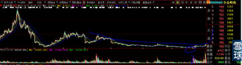
股价经过8、9、10、直到11月12日共计4个月后的调整（现在知道一只股票操作有多难吧），重回短期上升均线（下图3处），这个时候你就要动脑筋了。图中1—2处的垂直距离是8.86元-5.29元=3.57元/5.29元=涨幅67.48%，这是大资金底部吸筹低廉筹码后盘面已经没有多少浮筹，再拉高强行加仓才会有的高度。吸筹期间就舍得如此高举高打手法吃饱筹码，必定是大手笔庄家长期谋定而后动的坐庄计划所为。2—3处长达4个月的洗盘，股价并没有深跌（股价调整期间，跌幅越小证明庄家越强悍而不是相反，我们的取舍不是找跌的深的，恰好要找跌的少的。正所谓强壮恒强弱者恒弱），是庄家为了用时间换空间必须的”做图形“过程。今天教你们一点真功夫！为什么庄家必须要有这4个月过程？因为不如此，市场参与者会认为股价短期涨幅过快，追高资金都有恐高症（你们看看今天的券商股就知道了）。通过这4个月的窄幅震荡与图形缓冲转换，你现在再去看日线图，会不会觉得价格可以接受了？这就是时空转换，庄家刻意人为造成视觉错误。还用教你们券商股未来怎么走吗？吸筹都用了那么高的幅度，现在下图之股开始长达数月的主升浪3会低于建仓的1浪吗？走多长时间我不知道，能走多高我一定心中有数。
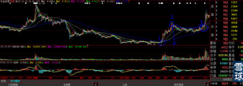
下图是中金岭南周线图，今后你们发现主力自大底部建仓股后，就在我圈中的部位买入它，这就叫狙击庄股。圈定的地方，就是最简单的5、10、21周线重新多头排列的时间，下面的最常见的MACD指标，在周线中才这么简单明了。所以我老是教你们用周线过滤掉你内心的抖动。
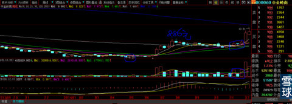
2、庄股一定有明显的建仓动作。
见下图，这是002581南洋股份，我就是在图中的末端位置那天随手翻到它，1秒钟都不用就知道它是庄股，研究资料实在没有可圈可点之处，不管这些，反正庄股无疑全仓买入。注意所圈之处K线的大开大合，只有这样才能是沉寂的筹码松动。
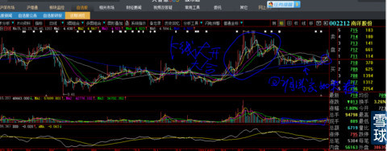
根本没有想到，第三天就开始连续涨停后第六天全部卖出。这是今年我最运气也是最得意的一次操作。后来才市场传闻是充电桩题材（其实就是绝对股价低股本相对较小有炒作价值与空间而已）
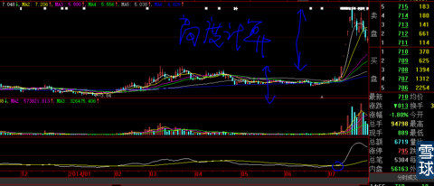
下图是002581万昌科技，所圈之处是2013年10月主力建仓之处，回落中我开始潜入，回调震荡时间太长。客观原因是当时看到300317是打明牌的庄股，明显我要换仓进入，主观上来讲，其实也是自己的信心开始从动摇到崩溃（时间太长，活蹦乱跳的股票太多，心静不下来呀，总自以为可以战胜市场），就在第二个小圈处保本出局。
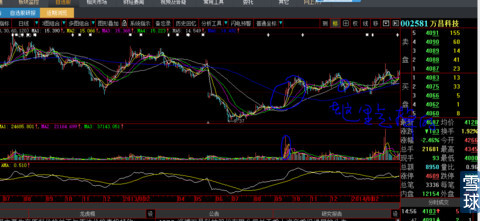
再过3个月，万昌科技的涨幅让我欲哭无泪。这是我今年上半年最惨的一次操作。资金空耗数月，稻草都没有捞到一根，下图2处就是我出局的位置。
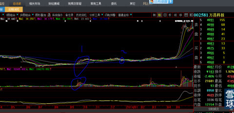
下图是002578闽发铝业，大圈中的K线组合上下影线都很长，是不是与上面讲的“南洋股份”K线大开大合有异曲同工之妙？目的就是利用分时盘中的快速上下翻飞达到松动前期头部套牢筹码的目的。后面走形与前面举例走出”丫“型是不是很相似？我太熟悉这种庄股的操作手法了（你们去观察皖能电力2004年11月12日就是这样），就在这一天，我在雪球发帖，《这样的庄股不吃它天理不容》，当时的股价13元，2周后股价到19元。
今天的“600823世茂股份”就处于类似下图“丫”型的左侧位置，再过2周后我们看看能不能走出大幅度拉升行情（估计再2014年1月了，这种股票技术派不做天理不容）。
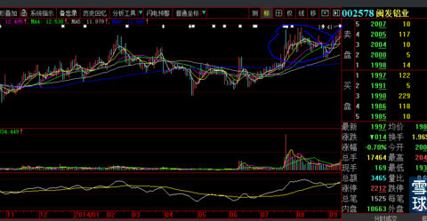
下图是皖能电力2014年11月12日”丫“型平台突破的日K线，“丫”型出现后，一般会有几天的下跌做最后的拉升前洗盘，这天我再次在雪球讲解皖能电力基本面分析（没有讲解技术面），再一周我发出《从皖能电力的周线看未来》专贴，应该有一半以上粉丝详细读过，由于太过于与现实结合，怕有SB转发到股吧，第二天就删除了。
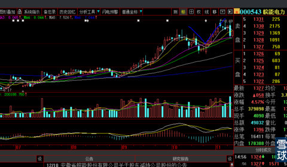
这是今天的结果，股价达到13.3元，一个月不到50%以上涨幅。下图所圈之处就是你们现在看到的被电脑框架压缩的图形（在此再传授一个绝技，有的人可能不以为然，等你有一天突然明白就知道我说的有多么重要。电脑的屏幕是固定大小的，股价波幅扩大后，会严重误导你发现什么地方是底部（哪怕是中继底部），那些地方是头部，特别是上市的新股，大光头阳线或者阴线的视觉冲击力会格外震撼，等再过一年，你会发现，那些巨大的K线会隐销在K线的海洋里毫不起眼。你们就看看我发出的两张皖能电力图，就会领悟我要说的是什么？上图”丫“型，在股价大涨后，你会感觉我圈定的地方的下跌不值一提，问题是你再看上图，就会发现你哪个时间会惶惶不可终日，就像今天的XHP和LHGF）。我认为这就是技术的力量。
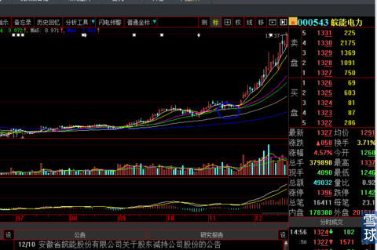
下图第一个小圈之处是11月24日是我在雪球选出600287江苏舜天的日子，股价在11月28日冲破平台后又回落到原价处（这个上下幅度可是接近20%啊所以要回踩赶走跟风盘），现在又走出如同类似上面举例的皖能电力“丫”型，如果后几天恰遇大盘暴跌或者庄家敢于逆势大幅快速缩量下跌达到恐怖的震仓目的，简直就是给我这样的技术派送钱机会。让我们拭目以待后期的发展，会不会是又一个明显控盘庄股进入了快速拉升拔高期的黄金股。
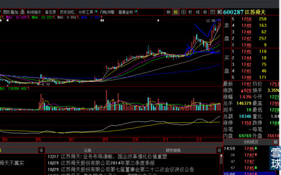
二、庄股会涨多高？
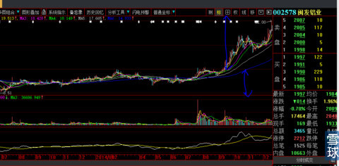无法完成，
从上图闽发铝业的股价高度，大家会发现，股价一旦突破，即使撞撞跌跌也会达到：（建仓最高价—底部最低价）*2+建仓最高价。
再例如：上图的南洋股份。你们去计算一下。
还有一种图形算法：大三角型突破位置价格+大三角型垂直距离的2倍，例如下图的东方明珠（1999年6月），大三角型突破位置我已经画出来了，你们自己动手计算会发现很多神奇之处，后来我就明白了，这是市场的力量和眼感的忍受极限。
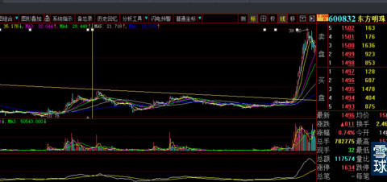
不过特别提醒，这是大致范围，不要有傻子对照每一只股票计算后问我：每一个股票的对照为什么不是这样的幅度呢？喂，大哥，我在告诉你普遍规律。懂么！
记住一个忠告：图形越大涨幅越高，图形越小涨幅相对越少！正所谓：横有多长竖起来就有多高！
这样写下去没完没了，还是先停吧。
这种纯技术贴我可以长期保留，反正也不怕砸场子的，我估计真正的高手看到后，也只会感叹！我还就把话就撂在这里了。
我之前说过：拔剑四顾心茫然！
自视多高由此可见！根本不惧任何顶尖高手。这种人我见过多了，跟我同时代比我运气好的不知道死了多少，也不过尔尔。我相信悟性，没有多少人有这种技术+心法悟性。再说了，剑术再好，没有一颗勇敢的心，没有稳如泰山的定力，没有曾经沧海的“心法”，技术越好死的越快！
技术好有个屁用。
有人度娘出来我以前删掉的文章，奇怪，已经删除了怎么还能百度出来？
刚才有朋友提问：老师我看到这种股横盘的走势后，理解为一种倔强走势，就是不知道阻击点如何选。还有一种走势如华茂2014.6.30——2014.9.29这一段杀了一波之后才起的9.29——10.27，这两种走势有和不同呀老师，一种直接上了一种杀过才上的，恳求老师讲解一下。
讲解：我这样给你截图，你就会发现原来不就是“丫”型吗？
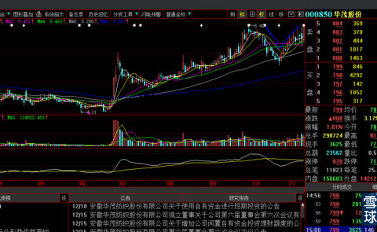
为什么要走“丫”型啊？这就是主力在长时间吸筹饱了。准备由前期的缓慢酝酿到拔高盈利前，利用日线的抖动加市场公认的MACD、KDJ这些快速摆动指标骗线呀，你再看下图，是不是“Y”型位置微不足道了？这就是我上面讲的电脑框架和庄家“画图”给你人为造成视觉错误。所以说：庄家骗线只能在日线中运用，今天的“红太阳、西藏城投、力合股份、新黄浦”等等不就是如此吗？硬要我说的那么直白干嘛？不把从底部跟进的吸庄血蝗虫用残酷手段赶出去（他们的成本太低廉），会是拉升过程中的最大障碍，你是庄难道不怕？在高位他们如果全部倒出筹码，你得挺着接住，不然股价就跨了。对于庄家来说拉升是不需要技术含量的，“坐庄”是绝对的综合素质技术工种，没有几个人可以胜任。要知道那样维护股价成本多高呀？所以股价在低位是反反复复折腾。一旦拔高是一气呵成的。高度你自己由于会计算了，就不会畏惧中间的上下折腾，不可能不到那个位置。为什么呢？因为不到那个位置庄家会死。坐庄就会失败。股价涨幅一倍，庄家能挣到40%的钱就算高级操盘手了，能赚60%全国也没有这样几个操盘设计专家（我指的是纯粹坐庄股，例如前例南洋股份，基本面一塌糊涂，唯一可以利用的就是绝对低价、筹码可控，为坐庄而坐庄）。如果低于我给出的量度升幅，庄家就会陷入泥潭。一旦拉升就没有回头路可走要一气呵成，否则所有的技术派和恐慌盘全部涌出，庄家没有那么多的资金，就会被穿仓和爆仓。
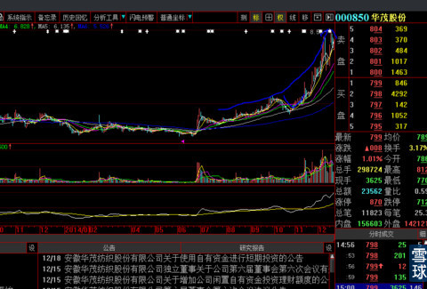
如何对付这种庄家的震仓呢？很简单呀！你看看下面这张周K线图所依托的周均线的多头排列但是还那么短？与左侧相比根本不成比例（现在知道什么圆弧底、头肩底等等技术名称图形是如何走出来的了吧），你试想，这些周线是多么有力的支撑股价并且刚刚多头排列，那可是周线啊（更不用说是月线了）！要打穿它得多大的空头成交量？打穿它除非庄家把底盘仓都砸出来，那样还坐个屁庄呀！上图你去观察，恰好在"丫"型的左侧下跌过程中，量能是多么的微小？说明浮筹和恐慌盘很少了，如此试盘之后，庄家才敢于放心上拉股价。
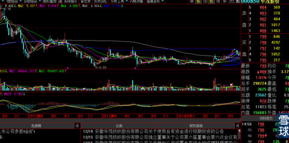
至于你说的为什么有的股票直接就上了呢？那是因为在单日的大跌中，跟风盘成交量单日就放出暴量，股价还处于启动的相对低位，达到洗出或者叫震出吸血底部跟风盘筹码（洗盘和震仓有本质的区别，以后有空再说），这种方法一般都在大盘的大跌中庄家放大恐怖顺势完成的。例如前几天的力合股份。
正在走“丫”型左侧的600823世茂股份2014年12月19日上周五收盘图，我们能预感到“丫”未来的长相。

再给你看一张图，你就知道“丫”型的威力有多大，同时能够明白图形越大涨幅越大，图形越小涨幅越少的道理。
下图是000758中色股份2006年3月30日，是不是典型的“丫”形态？但是形态显得比较大！它就是一天震仓完毕，第二天就开始一去不回头。这个图形9年了，我仍然不时的翻盘复习，它已经沁入我的血液之中。
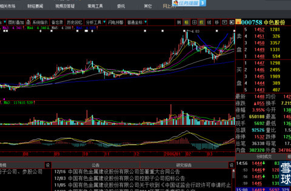
对，就是因为图形比较大，庄家运作时间长，才会有后来的快速拔高以及直奔目标高度的量度升幅，看看多么完美。再说一遍，横起来有多长竖起来有多高，再问我手中持股，我就拉黑你。
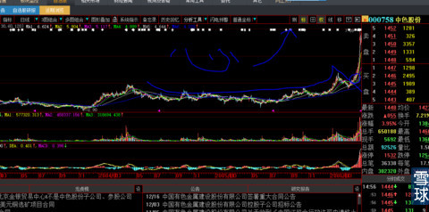